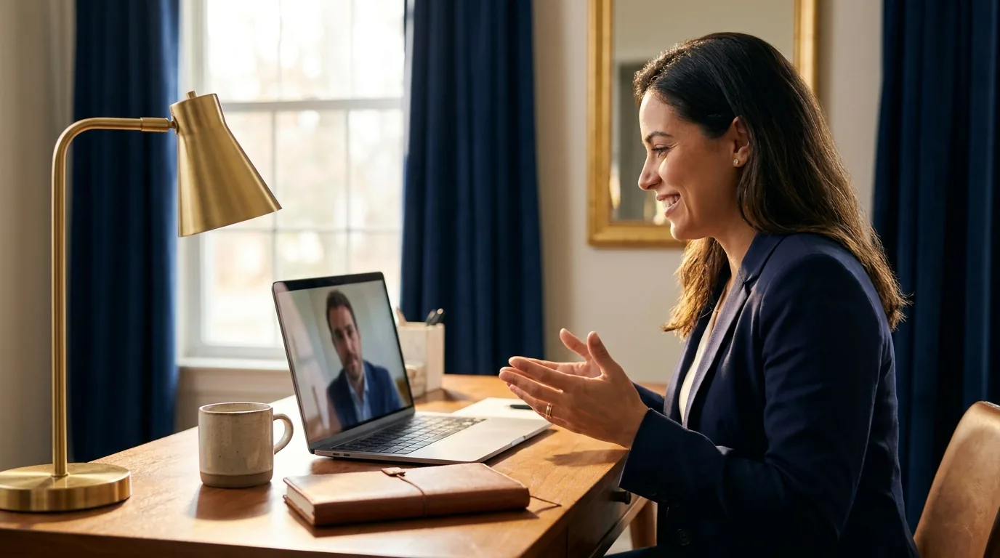
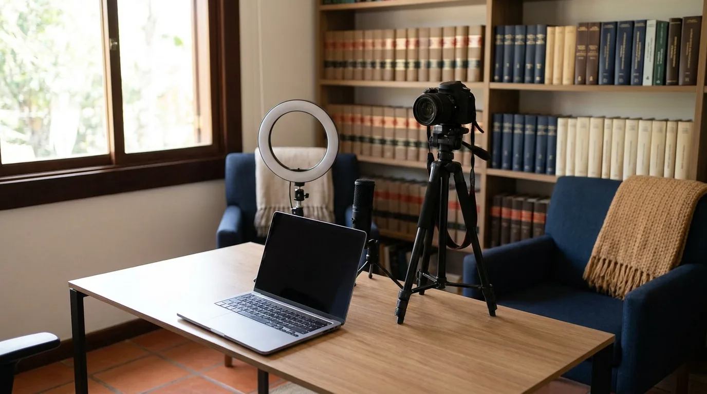
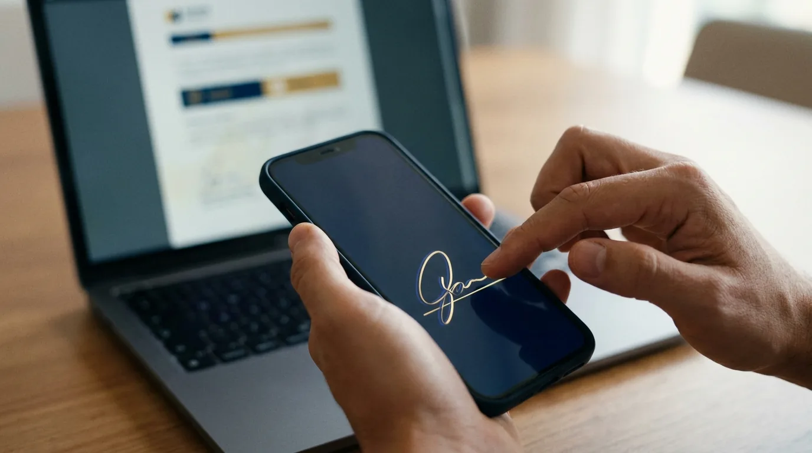

Advocacia Online: Como Atender Clientes 100% à Distância

O cliente agenda pelo site, a reunião acontece por vídeo, o contrato chega por link e a assinatura sai do celular. Processo eletrônico, audiência por videoconferência, honorários no Pix. Em nenhum momento alguém apertou a mão de ninguém, e o atendimento foi impecável do início ao fim.
Essa é a advocacia online funcionando de verdade. Não como improviso de pandemia, mas como modelo de operação escolhido por escritórios que decidiram atender sem depender de sala de espera.
Muitos advogados ainda travam nesse movimento por dúvidas práticas. Pode atender só por vídeo? O contrato assinado à distância vale? Como fica o sigilo? E a OAB, permite tudo isso?
Este guia responde a uma por uma. Você vai ver o que a advocacia online exige de estrutura, quais ferramentas sustentam a operação, como funciona a assinatura eletrônica do contrato de honorários e o que fazer para o cliente remoto confiar tanto quanto o presencial.
Um aviso antes de começar: este texto trata da operação do atendimento à distância. Se o seu interesse é a estratégia de alcançar clientes em outras cidades e estados, já publicamos um guia sobre o advogado nômade e a captação em todo o Brasil. Os dois se completam: lá você aprende a ser encontrado em qualquer lugar; aqui, a atender bem quando encontram você.
O que é advocacia online e o que a OAB permite
Advocacia online é o exercício da advocacia com atendimento, comunicação e gestão feitos por canais digitais. A consulta acontece por videochamada, os documentos circulam em nuvem, o contrato é assinado eletronicamente e o acompanhamento do caso chega por mensagem ou portal do cliente.
O ponto que mais importa: nada disso muda a natureza do serviço. As obrigações do advogado continuam idênticas às do atendimento presencial, do sigilo profissional à responsabilidade técnica. Muda o canal, não o dever.
O que a OAB permite no atendimento remoto
A resposta curta: a advocacia online é permitida e regular. Não existe norma que obrigue atendimento presencial ou exija sala física aberta ao público. O Estatuto da Advocacia exige inscrição na OAB e endereço profissional registrado, que pode ser residencial ou virtual, aquele contratado em coworking só para registro e recebimento de correspondência, como vimos no guia sobre como abrir um escritório de advocacia.
O processo judicial acompanhou o movimento. O peticionamento é eletrônico há anos, e audiências por videoconferência viraram rotina nos tribunais. O próprio Judiciário opera à distância; seria estranho exigir do advogado o contrário.
Publicidade e captação: as regras continuam as mesmas
Na advocacia online, a vitrine é digital por definição, e é aí que mora o cuidado. O Provimento 205/2021 vale integralmente: conteúdo informativo pode, inclusive impulsionado, que é pagar à plataforma para que a publicação alcance mais gente; promessa de resultado, preço em anúncio e captação ostensiva não podem.
⚠️ ATENÇÃO: Atender à distância não afrouxa nenhuma regra ética. Consulta jurídica é ato privativo de advogado, mesmo por vídeo; sigilo vale em qualquer canal; e a publicidade segue o Provimento 205 na íntegra. Quem trata o online como terra sem lei coleciona representações na seccional.
A estrutura mínima para atender 100% à distância

A boa notícia da advocacia online é o custo de entrada. A estrutura cabe em qualquer orçamento, porque troca metro quadrado por processo bem desenhado.
| Frente | No modelo presencial | Na advocacia online |
|---|---|---|
| Endereço | Sala comercial aberta ao público | Endereço residencial ou virtual registrado na OAB |
| Recepção | Secretária no balcão | Agenda online + confirmação automática |
| Reunião | Sala de reunião própria | Videochamada com link agendado |
| Documentos | Arquivo físico e cópias | Nuvem criptografada (arquivos embaralhados, legíveis só com a chave) |
| Assinatura | Caneta e cartório | Assinatura eletrônica com validade jurídica |
| Pagamento | Boleto e transferência no balcão | Pix, cartão e link de pagamento |
Três pontos dessa tabela merecem atenção especial.
O primeiro é o endereço profissional. Como visto na seção anterior, ele continua obrigatório no registro. O que define a advocacia online não é a ausência de endereço, e sim a ausência de dependência dele.
O segundo é a agenda. No presencial, a secretária filtra e organiza; no remoto, quem faz isso é a ferramenta de agendamento com confirmação automática. Cliente que marca sozinho e recebe lembrete falta menos.
O terceiro é o ambiente de atendimento. Videochamada com fundo bagunçado, áudio ruim e conexão caindo destrói em minutos a credibilidade que o seu conteúdo construiu. Câmera na altura dos olhos, microfone decente e um fundo neutro custam pouco e mudam tudo.
Tenha também um plano B de conexão. O 4G do celular compartilhado com o notebook segura a audiência quando a internet fixa cai, e cai sempre no pior momento. Advogado que já entrou em audiência por videoconferência sabe: a redundância de internet custa quase nada e vale um caso inteiro.
Fora da tabela, há um quarto ponto, menos visível: a disciplina da rotina. Quem atende de casa precisa desenhar o próprio expediente, com blocos fixos para audiências, atendimentos e produção, senão o dia vira uma sequência de interrupções. O advogado home office que prospera trata o horário de trabalho com a mesma seriedade de quem bate ponto, apenas sem o deslocamento.
Definir onde termina a casa e começa o escritório também protege a família e o cliente. Porta fechada durante o atendimento, celular profissional separado do pessoal e um limite claro de horário para responder mensagens evitam tanto a reunião interrompida quanto o esgotamento de quem nunca desliga.
💡 DICA VALIOSA: Grave um vídeo de teste de dois minutos simulando uma consulta e assista à gravação como se fosse o cliente. Som, luz, enquadramento e postura dizem mais sobre o seu profissionalismo do que o diploma na parede que ninguém vai ver pela câmera.
As ferramentas que sustentam a advocacia online
A advocacia online pede um conjunto enxuto e bem integrado de ferramentas. Dezenas de aplicativos soltos criam mais rotina do que resolvem.
Atendimento e agenda
A base é uma ferramenta de agendamento online conectada à sua agenda pessoal, oferecendo horários reais e enviando lembretes. Para a videochamada, escolha uma plataforma estável e use link com sala de espera, evitando que um cliente entre na reunião do outro.
O WhatsApp merece regra própria, porque é onde o cliente brasileiro está. Use a versão comercial, com mensagem de saudação, horário de atendimento visível e respostas rápidas para as perguntas repetidas. E deixe combinado em contrato qual é o canal oficial do caso: conversa espalhada entre aplicativo pessoal, e-mail e telefone é a receita do mal-entendido.
Gestão do caso na nuvem
O software jurídico segue sendo o coração da operação, como em qualquer escritório: prazos, andamentos, documentos e histórico de cada cliente num lugar só, acessível de qualquer máquina. Na advocacia online ele ganha uma função extra: portal do cliente, onde a pessoa acompanha o próprio caso sem precisar ligar para perguntar.
Peticionamento e certificado digital
O certificado digital do advogado é o passaporte do trabalho remoto: com ele, o peticionamento eletrônico funciona de qualquer lugar do país. Somado ao processo eletrônico, ele permite atuar em comarcas onde você nunca pisou, o que abre a porta para a consultoria jurídica online em escala nacional.
Perceba o efeito combinado: agenda, vídeo, nuvem e certificado eliminam a geografia da operação. O desafio que sobra é fechar negócio e sustentar a confiança à distância, temas das próximas duas seções.
Contrato e honorários: fechando negócio à distância
A parte que mais gera insegurança na advocacia online é o fechamento. Reunião foi bem, cliente quer contratar. E agora, como formalizar sem ninguém assinar papel?
Assinatura eletrônica tem validade jurídica

A resposta começa no Código Civil: contrato de honorários não exige forma especial, valendo a liberdade de forma do artigo 107. A MP 2.200-2/2001 completa o quadro ao admitir qualquer meio de comprovação de autoria aceito pelas partes. E a Lei 14.063/2020, embora regule as relações com o poder público, criou a classificação de assinaturas que o mercado adota como referência. Na prática: contrato assinado eletronicamente vale, e os tribunais reconhecem essa validade com tranquilidade quando a plataforma registra trilha de auditoria, ou seja, quem assinou, quando e de qual dispositivo.
| Tipo de assinatura | O que é | Quando usar no escritório |
|---|---|---|
| Eletrônica simples | Aceite registrado em plataforma (confirmação por e-mail, clique ou código por SMS) | Contratos de honorários do dia a dia |
| Eletrônica avançada | Vinculada de forma única a quem assina (selfie, documento ou biometria), com detecção de alterações no arquivo | Contratos de maior valor ou risco |
| Qualificada (ICP-Brasil) | Feita com o certificado digital da Infraestrutura de Chaves Públicas do governo, o mesmo do processo eletrônico | Atos que exigem certificado e máxima segurança |
Para o contrato de honorários comum, a assinatura eletrônica por plataforma idônea resolve. Guarde o documento com o relatório de assinaturas: em caso de discussão, essa trilha é a sua prova.
Honorários online: cobrança sem constrangimento
A cobrança à distância pede o mesmo profissionalismo do atendimento. Três práticas resolvem a maioria dos casos.
Primeira: proposta por escrito logo após a reunião, com escopo, valor e forma de pagamento claros. O documento evita o mal-entendido que a conversa por vídeo às vezes deixa.
Segunda: facilite o pagamento. Pix, cartão em link de pagamento e parcelamento aumentam a taxa de fechamento sem mexer no valor. Cliente que precisa ir ao banco esfria.
Terceira: entrada antes de começar. Na advocacia online, o sinal pago na contratação separa o cliente decidido do curioso e protege a agenda de quem vive de hora técnica.
Para quem atua no consultivo, vale estudar também o modelo de assinatura. Empresas e profissionais que precisam de orientação recorrente pagam um valor mensal por um pacote definido de consultas e análises. A consultoria jurídica online por assinatura gera receita previsível, e previsibilidade é o que transforma escritório em negócio.
Se o seu gargalo não é fechar, e sim fazer o telefone tocar, o problema é de visibilidade. A JuriDigital monta a máquina de captação da advocacia online: site que agenda sozinho, conteúdo nas primeiras posições do Google e anúncio dentro das regras da OAB. Converse com o nosso time e transforme o atendimento remoto que você já domina em agenda cheia.
Segurança, sigilo e a confiança do cliente remoto
O sigilo profissional não tem versão light para o digital. Dados de cliente e de processo pedem os mesmos cuidados no online que os autos pediam no armário trancado, agora com LGPD por cima.
O kit básico de segurança da advocacia online tem cinco itens:
- Autenticação em duas etapas em e-mail, nuvem e software jurídico: além da senha, o sistema pede um código gerado no seu celular, e quem descobre a senha continua do lado de fora
- Nuvem profissional criptografada, nunca o drive pessoal misturado com fotos de família
- Canal oficial de comunicação definido em contrato, regra que você já viu na seção de ferramentas
- Cuidado com rede pública: nada de acessar processo sigiloso em wi-fi de aeroporto; use a internet do próprio celular ou uma VPN, o aplicativo que cria um túnel seguro na conexão
- Descarte e backup com regra: o que guardar, por quanto tempo e como apagar
Sobre a videochamada em si, duas regras poupam dor de cabeça. Gravar reunião só com consentimento expresso do cliente, registrado no início da chamada ou por escrito. E tratar temas sigilosos apenas em ambiente controlado: consulta sobre caso criminal não se faz do café do coworking com desconhecidos ao lado.
Além da segurança real, existe a confiança percebida. O cliente remoto não vê a fachada nem a sala de reunião; ele julga pelo que aparece na tela. Site profissional, avaliações no Google, contrato bem redigido e pontualidade cirúrgica nas reuniões são a fachada da advocacia online.
🚀 OPORTUNIDADE: Boa parte dos advogados ainda atende online como quebra-galho, sem método. Quem estrutura a operação de verdade, da agenda ao contrato eletrônico, entrega uma experiência que o cliente compara com a de banco digital. Nesse padrão, a distância deixa de ser objeção e vira argumento de escolha.
E a captação? Esse é o assunto do guia do advogado nômade que citamos na introdução. Aqui fica só o essencial: sem método de visibilidade, a melhor operação remota do mundo fica com a agenda vazia. Se quiser esse método desenhado por especialistas em marketing jurídico, o time da JuriDigital faz isso todos os dias.
Perguntas frequentes sobre advocacia online
Advogado pode atender exclusivamente online?
Pode. Não existe norma que obrigue atendimento presencial. O advogado precisa de inscrição regular na OAB e endereço profissional registrado, que pode ser residencial ou virtual, confirmando sempre as regras da sua seccional, principalmente para registro de sociedade. A forma de atender, presencial ou por vídeo, é escolha do profissional e do cliente.
Consulta jurídica por videochamada pode ser cobrada?
Pode e deve. Consulta é serviço advocatício, por vídeo ou presencial. Formalize valor e escopo antes, envie a proposta por escrito e emita o recibo ou a nota normalmente. O que não pode é divulgar preço de consulta em anúncio, por vedação do Provimento 205.
Contrato de honorários assinado eletronicamente tem validade?
Tem. A liberdade de forma do Código Civil (art. 107) e a MP 2.200-2/2001 garantem a validade do contrato privado assinado eletronicamente. Use plataforma que registre trilha de auditoria e guarde o relatório de assinaturas junto do contrato.
Como fica o sigilo profissional no atendimento remoto?
Igual ao presencial, com cuidados digitais: autenticação em duas etapas, nuvem criptografada, canal de comunicação definido em contrato e atenção redobrada com redes públicas. O dever de sigilo não muda com o canal; o que muda é a forma de protegê-lo.
Advocacia online funciona para qualquer área do Direito?
Funciona para a maioria: consultivo, contratual, digital, previdenciário, trabalhista e tributário rodam bem à distância. Áreas com forte carga presencial, como o júri, seguem exigindo presença física em atos específicos, mas a gestão do caso e o atendimento ao cliente podem ser remotos mesmo nelas.
Preciso de CNPJ para atuar como advogado online?
Não. Valem as mesmas regras do modelo presencial: dá para atuar como autônomo só com a inscrição na OAB, ou constituir sociedade (inclusive unipessoal) para pagar menos imposto conforme o faturamento cresce.
Atendimento sem fronteira, operação com método
A advocacia online deixou de ser tendência para virar padrão de operação: a OAB permite, a lei valida o contrato eletrônico e o Judiciário já funciona à distância. O que separa quem prospera nesse modelo de quem improvisa é método.
O caminho está mapeado: estrutura enxuta com agenda e videochamada profissionais, gestão e documentos na nuvem, contrato com assinatura eletrônica, cobrança facilitada e segurança de dados levada a sério.
Feito isso, resta alimentar a máquina com o que ela consome: clientes chegando. Presença digital forte é o combustível da advocacia online, e construir isso é a especialidade da JuriDigital. Fale com a nossa equipe e coloque a sua operação remota para captar no Brasil inteiro.